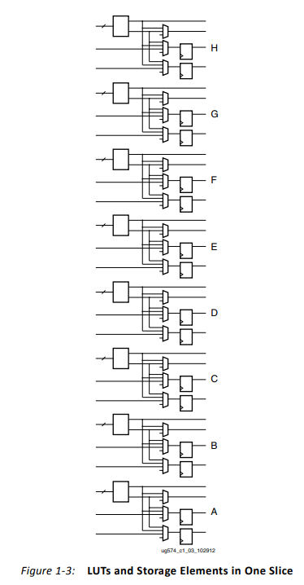
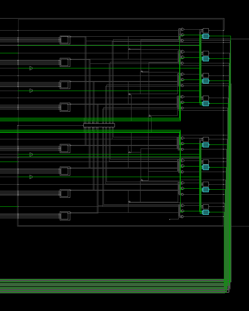

RapidWright PipelineGenerator Example¶
Generates a placed and routed circuit of flops that form a pipelined bus (think 2-D array of flops) having parameterizable spacing between pipeline stages. The generated .dcp file can be loaded into Vivado to view.
Input Parameters¶
Width (bits)
Depth (pipeline stages)
Distance (tiles)
Direction (horizontal or vertical)
Background¶
The selected device is a Xilinx VU3P (UltraScale+ device).
Figure 1-3 on pg. 8 of user guide UG574 shows the FFs contained within an UltraScale+ CLB (similar to UltraScale devices). Please see: https://www.xilinx.com/support/documentation/user_guides/ug574-ultrascale-clb.pdf for more description.
{kind=link}
In this example, the PipelineGenerator places flops (instantiated as FDRE) by specifying slice locations and the individual FF BEL sites that are within each slice. These are grouped in pairs and referenced by a letter. Please note that each letter contains a pair of FFs.
Steps to Run¶
Ensure you are familiar with the RapidWright directories and have an IDE project created for RapidWright. Using an IDE such as IntelliJ or Eclipse is highly recommended for exercises in this tutorial for easy compilation and for help with the RapidWright libraries and functions. While we don’t provide any IDE “how to” steps within this tutorial, if you do have questions please feel free to ask.
If you need to recompile the code, run:
javac com/xilinx/rapidwright/examples/PipelineGenerator.javafrom within your “<workspace_dir>/RapidWright” subdirectory. Alternatively, build this example using your IDE.After compiling, run:
java com.xilinx.rapidwright.examples.PipelineGenerator. This will generate an output called “pipeline.dcp”, containing the placed and routed circuit design.To see a list of available input options specify “-h” as an argument. Note: the horizontal direction is assigned within the source code, but it can alternatively be changed to vertical within main(). The source code for this example is located in:
<workspace_dir>/RapidWright/com/xilinx/rapidwright/examples/PipelineGenerator.java.
==============================================================================
== Pipeline Generator ==
==============================================================================
This RapidWright program creates an example pipelined bus as a placed and routed DCP.
See the RapidWright documentation for more information.
Option Description
------ -----------
-?, -h Print Help
-c [String: Clk net name] (default: clk)
-d [String: Design Name] (default: pipeline)
-l [Integer: distance] (default: 10)
-m [Integer: depth] (default: 3)
-n [Integer: width] (default: 10)
-o [String: Output DCP File Name] (default: pipeline.dcp)
-p [String: Ultrascale/UltraScale+ (default: xcvu3p-ffvc1517-2-e)
Part Name]
-s [String: Lower left slice to be (default: SLICE_X42Y70)
used for pipeline]
-v [Boolean: Print verbose output] (default: true)
-x [Double: Clk period constraint (ns)] (default: 1.291)
Example Design¶
Width = 10 bits
Depth = 3 pipeline stages
Distance = 10 tiles
Direction = horizontal
{kind=link}
{kind=link}
The above screenshot show the device view, zoomed in on the placed and routed circuit. This circuit consists of three pairs of slices, using the <horizontal> spacing distance of <10> tiles.
Although each CLB FF letter site contains a pair of flops, as described above, this example only makes use of the first flop in each pair, as a demo. This means that the lower slice for each of the pairs uses eight flops, and the upper slice uses two flops to satisfy the <width> request of ten bits. This was done intentionally towards setting up an example that could be easily modified to use both of the flops in the pair. The screenshot below shows a zoomed in view of the lower slice.
{kind=link}
Please refer to the example code for more implementation details. The Java source code for this example is located in: <workspace_dir>/RapidWright/com/xilinx/rapidwright/examples/PipelineGenerator.java.
This example was designed to illustrate basic functions, and please feel free to modify this example to experiment building other implementations.
Additional Exercises¶
Try modifying the PipelineGenerator to use all 16 flip flops in an UltraScale slice, this will lead to a more compact usage of CLBs at the potential expense of greater routing congestion.
{kind=link}
Hint: When using all sixteen flops or designs with higher bit widths, the minimum distance should be at least 10 tiles for routing.
This example of a PipelineGenerator is ideal for creating a long haul pipelined bus connection at high speed. This would be useful in connecting two modules physically distant on a device but need to communicate at high speed. Currently, the implementation can only pipeline in a single plane (horizontal or vertical). Modify the example such that it can pipeline both vertically and horizontally.